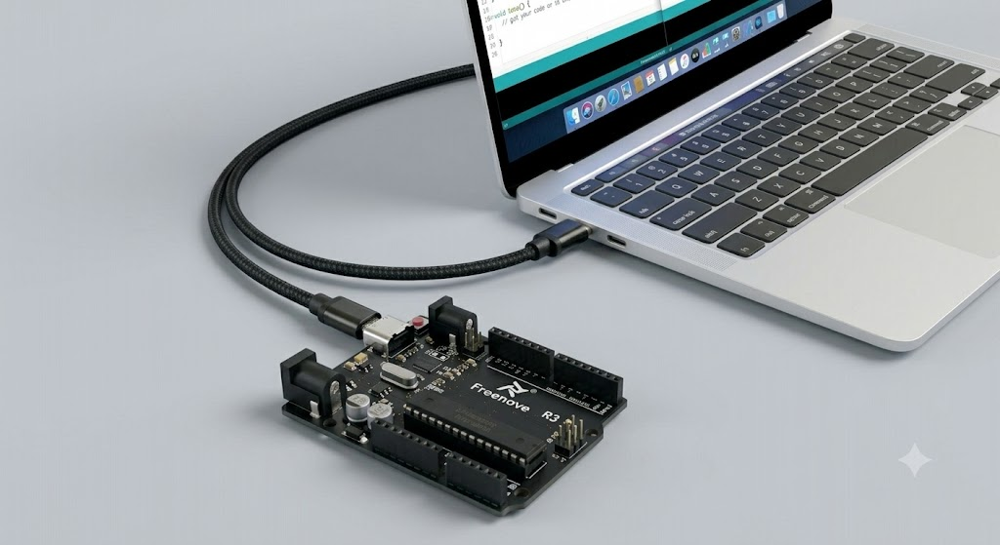
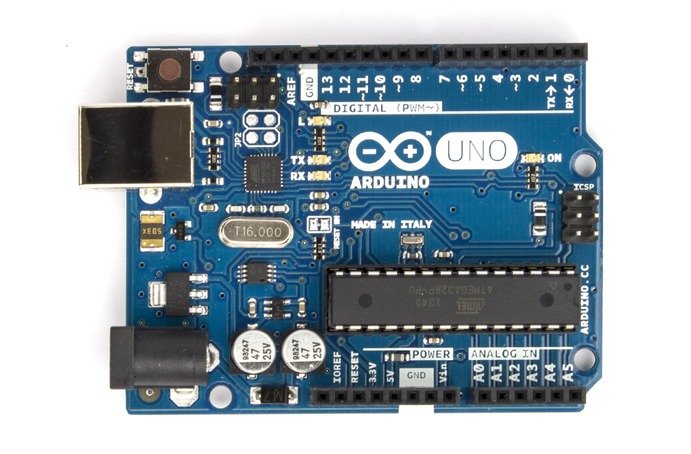

📁
חלק א · מכינים את התיקיות במחשב
✓
1
פותחים את סייר הקבצים של Windows עם הצירוף Windows + E
Q
W
E
R
T
A
S
D
F
Ctrl
⊞
Alt
⊞ Win + E
→
📂 File Explorer
✕
⭐ Quick
☁️ Drive
💻 PC
החלון נפתח ✨
✓
2
בסרגל הצד לוחצים על Google Drive, ואז נכנסים אל My Drive\Arduino_Projects
📂 File Explorer
✕
☁️ Google Drive (G:)›
My Drive›
Arduino_Projects
⭐ Quick access
☁️ Google Drive (G:) 👆
💻 This PC
✓
3
מוצאים את התיקייה האישית שלכם. אם אין — יוצרים אותה.
📂 File Explorer
✕
☁️ Google Drive (G:)›
My Drive›
Arduino_Projects
📁
Noa
📁
Adam
📁
השם שלכם 👆
📁
Maya
אין תיקייה עם השם שלכם? קליק ימני על אזור ריק ובוחרים New ▸ Folder — יוצרים אותה יחד עם המורה.
✓
4
בתוך התיקייה האישית יוצרים תיקייה חדשה בשם Project_1_Light_Signals
📂 File Explorer
✕
🖱️
View ▸
Sort by ▸
Refresh
Paste
New ▸
Properties
📁 Folder
🔗 Shortcut
📄 Text Document
קליק ימני בתוך התיקייה ובוחרים New ▸ Folder
✓
5
קוראים למורה. יחד פותחים את Claude Code ומגדירים אותו לעבוד בתיקייה Project_1_Light_Signals
🔌
חלק ב · מחברים את הארדואינו
✓
6
מחברים את הארדואינו Uno למחשב עם כבל USB — הקצה הקטן (USB-C) נכנס לארדואינו, והקצה הגדול יותר (USB-A) נכנס למחשב.

USB-C → לוח
USB-A → מחשב
✓
7
מוצאים על הלוח את הלד הירוק הקטן המסומן באות L, ליד רגל 13.

הלד הירוק · L
הלד L נמצא בשורת הלדים שליד רגל 13. כשהקוד רץ הוא נדלק באור ירוק.
⚙️
חלק ג · מגדירים את Arduino IDE (התוכנה שאיתה מתכנתים את הארדואינו)
✓
8
פותחים את Arduino IDE דרך הקיצור שעל שולחן העבודה.
🖱️
לחיצה כפולה על הסמל כדי לפתוח
✓
9
בתפריט Tools בוחרים Board → Arduino Uno
ToolsHelp
Auto Format
Board: "Arduino Uno" ▸
Port ▸
Get Board Info
✓ Arduino Uno
Arduino Nano
Arduino Mega
✓
10
באותו תפריט בודקים שב־Port מופיעה יציאת COM — למשל COM3 או COM4
ToolsHelp
Auto Format
Board: "Arduino Uno" ▸
Port: "COM3" ▸
Get Board Info
✓ COM3 (Arduino Uno)
COM4
המספר יכול להיות שונה במחשבים שונים — העיקר שמופיעה יציאת COM כלשהי.
👀
מה רואים אם הכול תקין
הלד הירוק הקטן L ליד רגל 13 מהבהב.
✅סיימתם כש…
✓
יש תיקייה אישית בתוך G:\My Drive\Arduino_Projects\
✓
בתוכה תיקייה בשם Project_1_Light_Signals
✓
הלד הירוק L על הארדואינו מהבהב